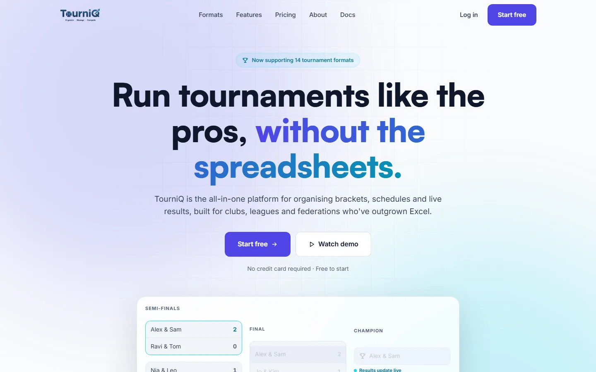

TourniQ
Live at tourniqsports.com
A tournament management platform for clubs, leagues and federations in racket sports such as padel and tennis. It puts registration, brackets, scheduling, scoring and public live results in one place, so organisers can leave spreadsheets behind.

- Brackets and formats
- 14 formats, including knockout, round robin, Swiss and Americano, with players advancing automatically.
- Scheduling
- Drag matches onto courts and time slots or schedule them in one click, with clashes flagged.
- Live results
- A public page, no login needed, where scores, standings and brackets refresh on their own.
- Referees
- Separate logins, so each referee scores only the matches assigned to them.
- Registration and payments
- Players sign up from a shared link and pay entry fees online through Paystack.
- Built with
- Java and Spring Boot, with a documented REST API.